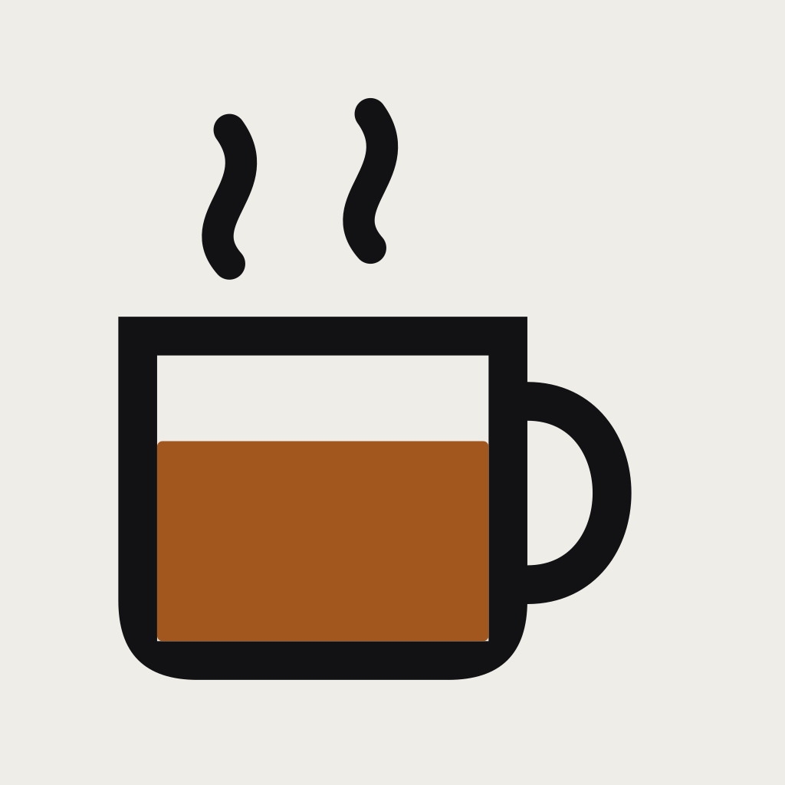

Your Mac stays awake while a coding agent is working, and sleeps the moment the agent is waiting on you.
Download for macOSMove the controls and watch the decision change. The rows behind this bench are the shipped policy, embedded as data — the page holds no second copy of the rules it is describing.
The filled bar holds the machine awake. The faded bar lets it sleep. An illustration of when the assertion is held — not a measurement.
Serving is on Auto, the display setting is Sleeps, the Mac is on AC power, and an agent is working.
PreventUserIdleSystemSleep.The screen still sleeps. coffee-bar takes no display assertion unless you ask for one.
The battery floor is a limit on the machine, not on one control position: on battery at or below 20%, coffee-bar releases the hold even when Serving is on On. Off is absolute in the other direction and outranks every session. The bench models the floor where it ships; the panel has a control that moves it, and the Docs page defines it.
| Serving | Display | On battery at or below 20% | An agent is working | Holds the system awake | Holds the display awake | Held back by the battery floor |
|---|---|---|---|---|---|---|
| Off | Sleeps | No | No | No | No | No |
| Off | Sleeps | No | Yes | No | No | No |
| Off | Sleeps | Yes | No | No | No | No |
| Off | Sleeps | Yes | Yes | No | No | No |
| Off | Stays on | No | No | No | No | No |
| Off | Stays on | No | Yes | No | No | No |
| Off | Stays on | Yes | No | No | No | No |
| Off | Stays on | Yes | Yes | No | No | No |
| Auto | Sleeps | No | No | No | No | No |
| Auto | Sleeps | No | Yes | Yes | No | No |
| Auto | Sleeps | Yes | No | No | No | No |
| Auto | Sleeps | Yes | Yes | No | No | Yes |
| Auto | Stays on | No | No | No | No | No |
| Auto | Stays on | No | Yes | Yes | Yes | No |
| Auto | Stays on | Yes | No | No | No | No |
| Auto | Stays on | Yes | Yes | No | No | Yes |
| On | Sleeps | No | No | Yes | No | No |
| On | Sleeps | No | Yes | Yes | No | No |
| On | Sleeps | Yes | No | No | No | Yes |
| On | Sleeps | Yes | Yes | No | No | Yes |
| On | Stays on | No | No | Yes | Yes | No |
| On | Stays on | No | Yes | Yes | Yes | No |
| On | Stays on | Yes | No | No | No | Yes |
| On | Stays on | Yes | Yes | No | No | Yes |
Two glyphs, and the cup tells you which one at a glance. It reports whether an assertion is held right now — not what your agents are doing, which is what the panel is for. These are the real glyphs, and they are monochrome on purpose: macOS tints template images to match your menu bar, so they stay legible on any wallpaper and in either appearance.
Auto, holds PreventUserIdleSystemSleep, bound to live agent session state.Auto, releases when every agent is blocked on input, not when a timer expires.Install coffee-bar — the download, the Homebrew tap, and the five Claude Code hooks that tell the app what your sessions are doing. Until those hooks are wired the app runs but no event reaches it.
Read the docs — what each control does, what the panel reports, what coffee-bar reads and what it deliberately does not read.